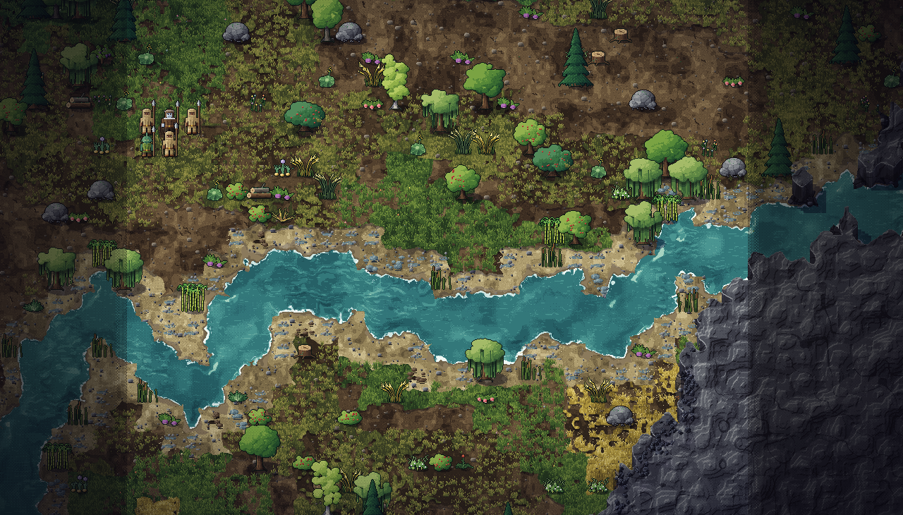
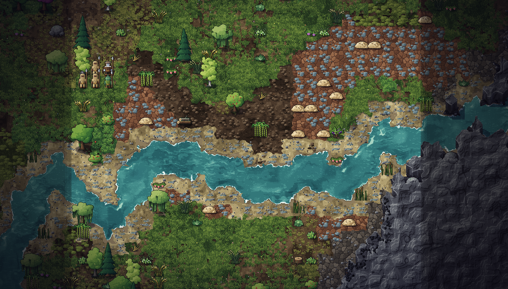
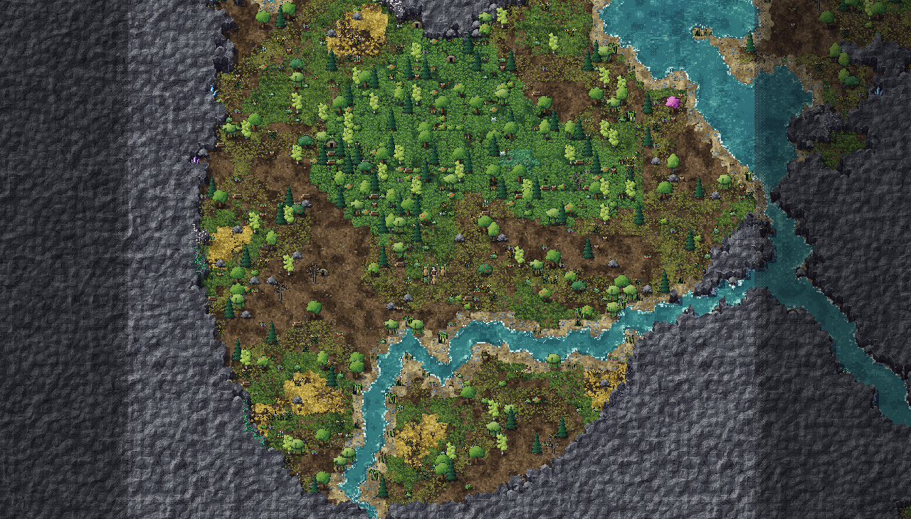
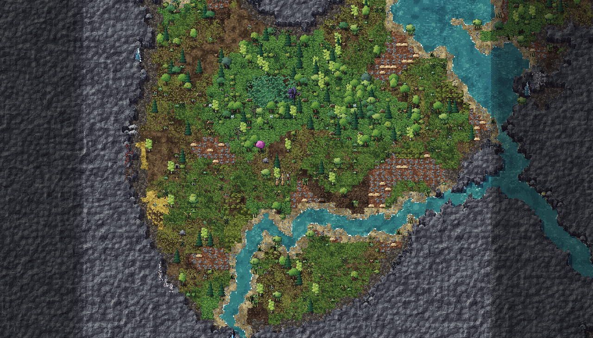
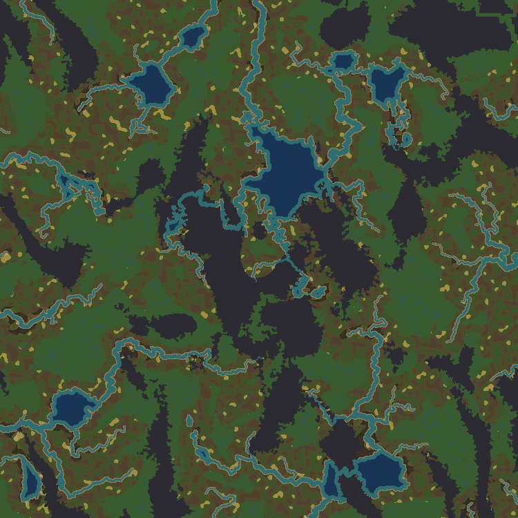
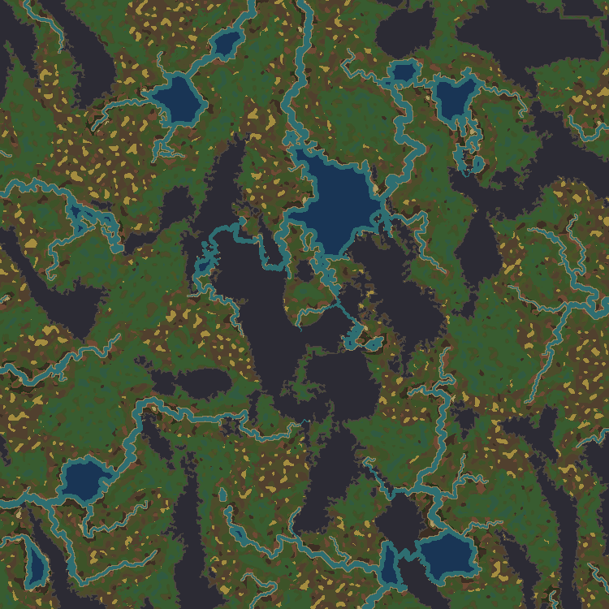

Ground by water
show
Pair
Before
After
table seed
17
1337
42
Auto
Light
Dark
Colony start, 32 px
before

after

Valley, 12 px
before

after

Whole map, 1 px per tile
before

after

Ground by distance from water
Share of ground, %